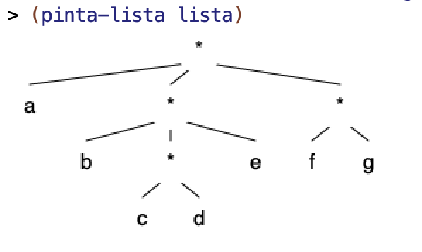
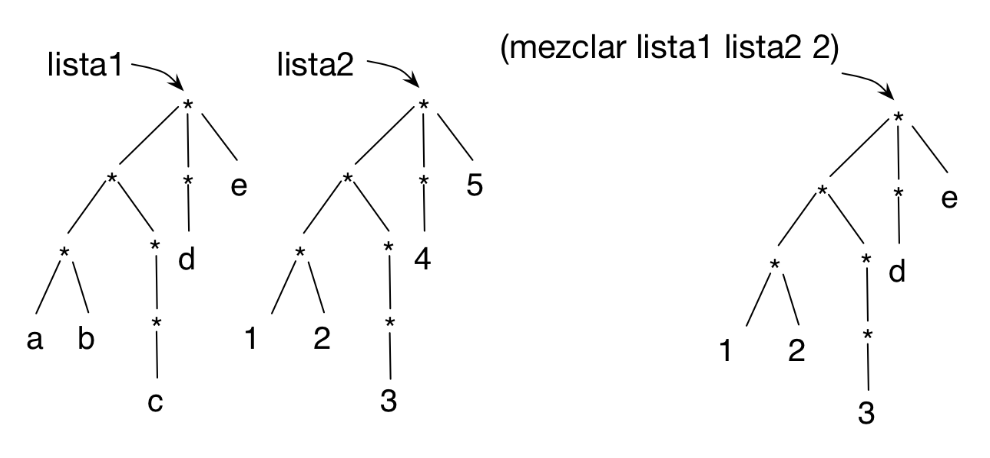

Lab 7: Structured Lists¶
Before the Lab Session¶
-
The following exercises are based on the theory concepts covered last week. Before the lab session, you should review all the concepts and try in DrRacket all the examples from the following sections of topic 4 Recursive Data Structures
- 1 Structured lists
Exercises¶
Download the
lpp.rkt file
by right-clicking and selecting the Save as option, saving it as lpp.rkt.
Save it in the same folder where you have the lab7.rkt file.
You can also find the lpp.rkt file in the course Moodle
site.
The file contains the definition of the (hoja? elem) function and the
(pinta-lista lista) function, which lets us graphically draw a structured
list.
For example, if we define a structured list as
(define lista '(a (b (c d) e) (f g)))
The call to pinta-lista will draw the following:

Exercise 1¶
a) Write the structured list corresponding to the following level-based graphical
representation. To check whether you have defined it correctly, you can try to
obtain some of the elements of the list, as shown in the check-equal? below.
*
/ | \
| | \
* d *
/ \ / / | \
a b c * * h
| / \
e f g
(define lista-a '(________))
(check-equal? (fourth (third lista-a)) 'h)
b) Draw the level-based representation of the following structured lists. Then
check with the (pinta-lista lista) function that you have drawn them
correctly.
(define lista-b1 '((2 (3)) (4 2) ((2) 3)))
(define lista-b2 '((b) (c (a)) d (a)))
c) Given the definition of cuadrado-estruct seen in theory:
(define (cuadrado-estruct lista)
(cond ((null? lista) '())
((hoja? lista) (* lista lista ))
(else (cons
①➜(cuadrado-estruct (first lista))
②➜(cuadrado-estruct (rest lista))))))
- Indicate what the expression
(cuadrado-estruct lista-b1)returns. The listlista-b1is the one defined in the previous part. - In the evaluation of the previous expression, indicate which arguments are
passed as parameters in the recursive calls to
cuadrado-estructmarked with1and2. - In the evaluation of the previous expression, indicate what the recursive
calls marked with
1and2return.
d) To understand how higher-order functions that work on structured lists behave,
it is very important to understand what the map expression applied to the list
returns.
The following function uses the (nivel-hoja-fos dato lista) function seen in
theory. Indicate what the following expression returns. The list lista-b2 is
the one defined in the previous part. Use the drawing you made in the previous
exercise to understand how the expression works.
(map (lambda (elem)
(nivel-hoja-fos 'a elem)) lista-b2)
Exercise 2¶
a) Implement the recursive function (concatena lista), which receives a
structured list with symbols and returns the string resulting from concatenating
all the symbols in the structured list. Implement two versions of the function,
one with pure recursion and another with higher-order functions.
Examples:
(concatena '(a b (c) d)) ; ⇒ "abcd"
(concatena '(a (((b)) (c (d (e f (g))) h)) i)) ; ⇒ "abcdefghi"
b) Implement the recursive function (todos-positivos? lista), which receives a
structured list with numbers and checks whether all its elements are positive.
Implement two versions of the function, one with pure recursion and another
with higher-order functions.
Examples:
(todos-positivos? '(1 (2 (3 (-3))) 4)) ; ⇒ #f
(todos-positivos-fos? '(1 (2 (3 (3))) 4)) ; ⇒ #t
Exercise 3¶
Implement the function (cumplen-predicado pred lista), which returns a list
with all the elements of a structured list that satisfy a predicate. Implement
two versions: one using pure recursion and another using higher-order
functions.
Example:
(cumplen-predicado even? '(1 (2 (3 (4))) (5 6))) ; ⇒ (2 4 6)
(cumplen-predicado pair? '(((1 . 2) 3 (4 . 3) 5) 6)) ; ⇒ ((1 . 2) (4 . 3))
Using the previous function, implement the following functions:
- Function
(busca-mayores n lista-num), which receives a structured list with numbers and a numbern, and returns a flat list with the numbers from the original list that are greater thann.
(busca-mayores 10 '(-1 (20 (10 12) (30 (25 (15)))))) ; ⇒ (20 12 30 25 15)
- Function
(empieza-por char lista-pal), which receives a structured list with symbols and a characterchar, and returns a flat list with the symbols from the original list that start with the characterchar.
(empieza-por #\m '((hace (mucho tiempo)) (en) (una galaxia ((muy muy) lejana))))
; ⇒ (mucho muy muy)
Exercise 4¶
Two functions on levels:
a) Implement the function (sustituye-elem elem-old elem-new lista), which
receives a structured list and two elements as arguments, and returns another
list with the same structure, but in which the occurrences of elem-old have
been replaced by elem-new. You can implement it using pure recursion or
with higher-order functions.
Example:
(sustituye-elem 'c 'h '(a b (c d (e c)) c (f (c) g)))
; ⇒ (a b (h d (e h)) h (f (h) g))
b) Implement the function (nivel-mas-profundo lista), which receives a
structured list and returns a pair (elem . nivel), where the left part is the
element located at the deepest level and the right part is the level where it is
located. You can define a helper function if you need one. You can implement it
using pure recursion or with higher-order functions.
(nivel-mas-profundo '(2 (3))) ; ⇒ (3 . 2)
(nivel-mas-profundo '((2) (3 (4)((((((5))) 6)) 7)) 8)) ; ⇒ (5 . 8)
Exercise 5¶
a) Define the function (mezclar lista1 lista2 n), which receives two structured
lists with the same structure and a number indicating a level. It returns a new
structured list with the same structure as the original lists, with the elements
from lista1 that have a level less than or equal to n, and the elements from
lista2 that have a level greater than n. You can implement it using pure
recursion or with higher-order functions.

(define lista1 '(((a b) ((c))) (d) e))
(define lista2 '(((1 2) ((3))) (4) 5))
(mezclar lista1 lista2 2) ; ⇒ (((1 2) ((3))) (d) e)
b.1) Implement the recursive function (intersecta lista-1 lista-2), which
receives two structured lists as parameters and returns the resulting structured
list after traversing both lists and placing a pair formed by the leaf from the
first list and the leaf from the second in those positions where the traversal of
both lists ends at a leaf at the same time.
For example, if we define the two lists as follows:
(define lista-1 '(a (b c) (d)))
; *
; / | \
; a * *
; / \ \
; b c d
(define lista-2 '((e) (f) (g)))
; *
; / | \
; * * *
; / / \
;e f g
The intersection of both lists would be:
(intersecta lista-1 lista-2)
; ⇒ (((b . f)) ((d . g)))
; *
; | \
; * *
; / \
; (b.f) (d.g)
The function will traverse the first and second lists at the same time. In the
first list, at its first element, it will reach the leaf a, while in the second
list it will reach a sublist (the one containing e). There will be no
intersection there. It will then traverse the second element of the first and
second lists and reach the leaves b and f at the same time, so it will build
the pair (b . f). It will discard the sublist of the second list formed by
c, because there is no correspondence in the first list. Finally, it will
check that traversing the last element of both lists reaches the leaves d and
g at the same time, forming the pair (d . g).
You must implement only the recursive version.
Other examples:
(intersecta '(a b) '(c d)) ; ⇒ '((a . c) (b . d))
(intersecta '(a (b) (c)) '(d e (f))) ; ⇒ '((a . d) ((c . f)))
b.2) Generalize the previous function so that it receives another function with
the operation to perform on the leaves: (intersecta-gen f lista-1
lista-2). Write three examples of using the generic function with different
functions to apply to the leaves, and explain what each case returns.
Programming Languages and Paradigms, academic year 2025-26
© Department of Computer Science and Artificial Intelligence, University of Alicante
Domingo Gallardo, Cristina Pomares, Antonio Botía, Francisco Martínez